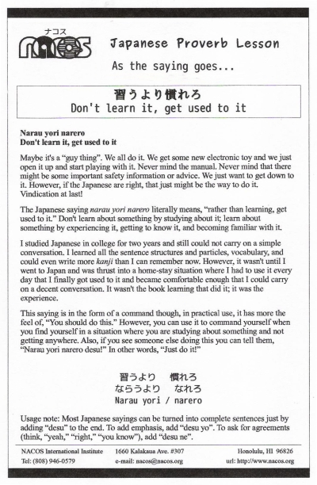

Narau yori narero
Don't learn it, get used to it
Maybe it's a “guy thing”. We all do it. We get some new electronic toy and we just open it up and start playing with it. Never mind the manual. Never mind that there might be some important safety information or advice. We just want to get down to it. However, if the Japanese are right, that just might be the way to do it. Vindication at last!
The Japanese saying narau yori narero literally means, “rather than learning, get used to it.” Don't learn about something by studying about it; learn about something by experiencing it, getting to know it, and becoming familiar with it.
I studied Japanese in college for two years and still could not carry on a simple conversation. I learned all the sentence structures and particles, vocabulary, and could even write more kanji than I can remember now. However, it wasn't until I went to Japan and was thrust into a home-stay situation where I had to use it every day that I finally got used to it and became comfortable enough that I could carry on a decent conversation. It wasn't the book learning that did it; it was the experience.
This saying is in the form of a command though, in practical use, it has more the feel of, “You should do this.” However, you can use it to command yourself when you find yourself in a situation where you are studying about something and not getting anywhere. Also, if you see someone else doing this you can tell them, “Narau yori narero desu!” In other words, “Just do it!”
Usage note: Most Japanese sayings can be turned into complete sentences just by adding “desu” to the end. To add emphasis, add “desu yo”. To ask for agreements (think, “yeah,” “right,” “you know”), add “desu ne”.

| © 1995-2013 NACOS International Institute. All Rights Reserved. |